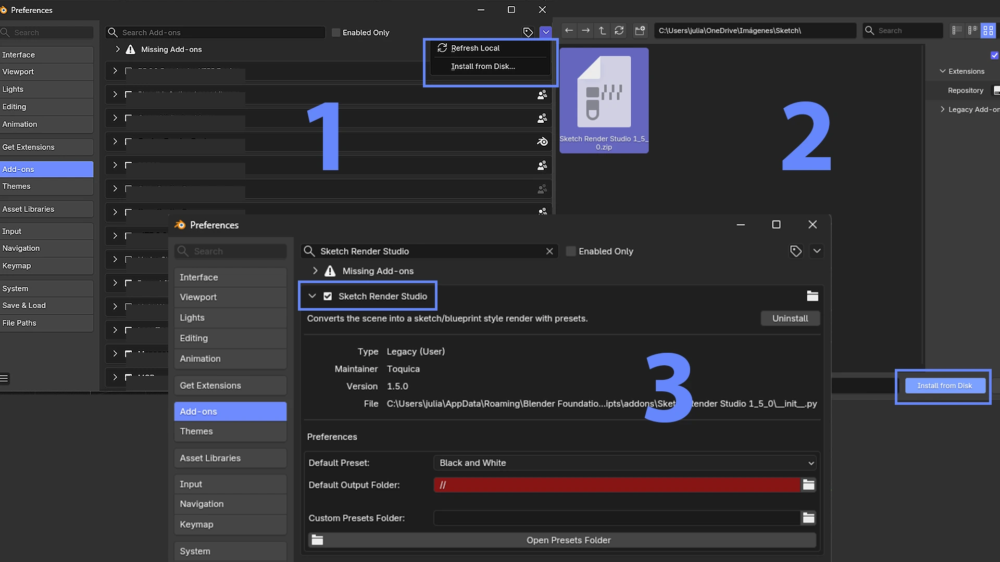
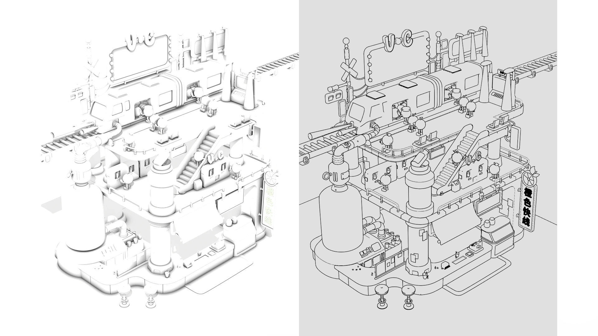

✦ Sketch Render Studio
Turn your Blender scene into a sketch, blueprint, or clay render — without touching a single material.
The complete guide: installation, all five presets, and the full workflow, step by step.
✦ Sketch Render Studio
The complete guide: installation, all five presets, and the full workflow, step by step.
Overview
Sketch Render Studio automates Blender's native Line Art (Grease Pencil) system to turn any scene into a sketch, blueprint, clay, or line art render — no manual material, modifier, or compositing setup. Pick a preset, hit render, done.
4.3 — 5.2+
One universal package, no separate versions
3
Operating systems — Windows, macOS, Linux
EEVEE / Cycles
Supported render engines
01 · Installation
.zip from Superhive.Edit > Preferences > Add-ons.Install from Disk….zip and confirm.The addon's file or folder name shouldn't contain periods — Blender can truncate the module name on install. Use hyphens if you need to rename it manually.

Preferences > Add-ons panel with Sketch Render Studio enabled">Interface
The Sketch Render Studio panel lives in the 3D Viewport, inside the Tool Shelf (N key). From there you pick the active preset, compare the result against your original scene with one click — Quick Compare A/B — and adjust contour thickness, crease angle, and line texture without leaving the viewport.
When the scene gets heavy, Viewport Simplify keeps navigation smooth; and if you switch the render engine manually, Sync From Scene matches the addon's settings in one click.

In practice
The same model, run through all 5 built-in presets. Pick one and Sketch Render Studio adjusts materials, world, and Line Art in a single click.


Custom presets
Beyond the five built-in presets, any combination of line, color, and texture can be saved as a reusable preset, with its own thumbnail.

Batch Render
Automatically renders all 4 material presets across every camera in the scene, in a single run — a full set of product or booth views without repeating the process by hand.
Split Passes & Compositor
Render Split Passes separates the line art from the base geometry using Holdout materials, and Setup Compositor automatically builds the node tree needed to work each layer separately.

Troubleshooting
Confirm it's enabled under Edit > Preferences > Add-ons by searching for “Sketch Render Studio”.
The file or folder name contains a period, which truncates the module name. Rename it without periods and reinstall.
Make sure you're in camera view — Blender's Line Art system only calculates correctly from there.
Support
To report bugs, get help with installation, or just show us what you built, reach out through Superhive or our support channel.